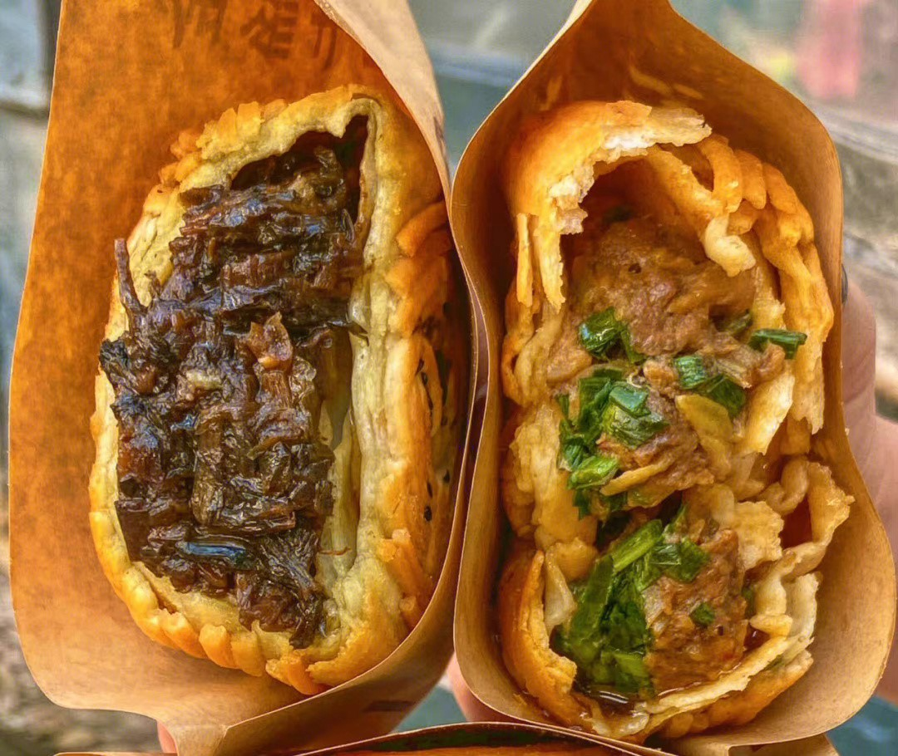
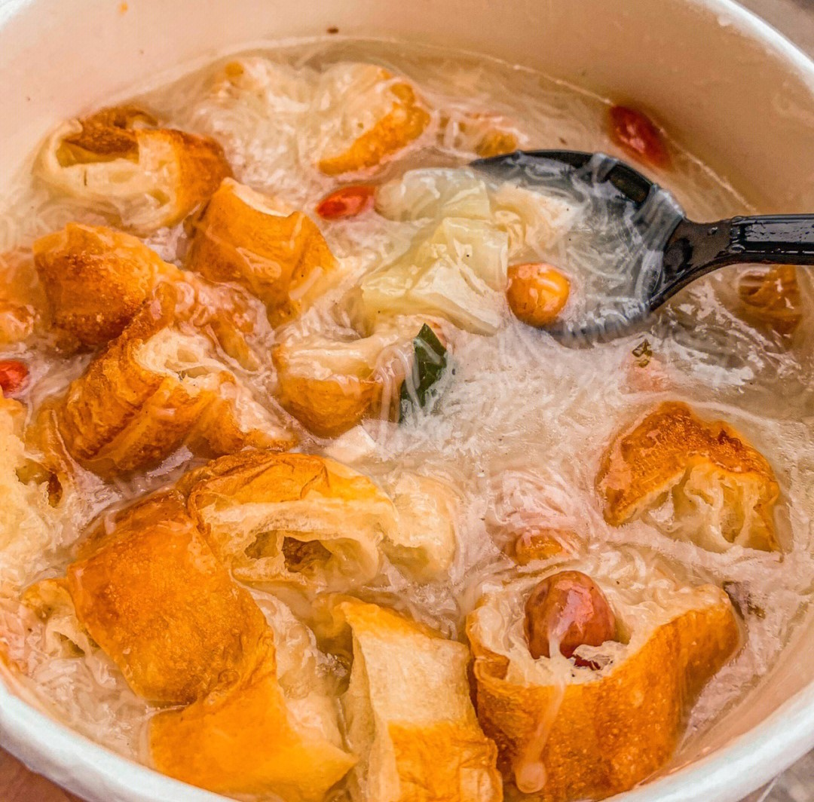
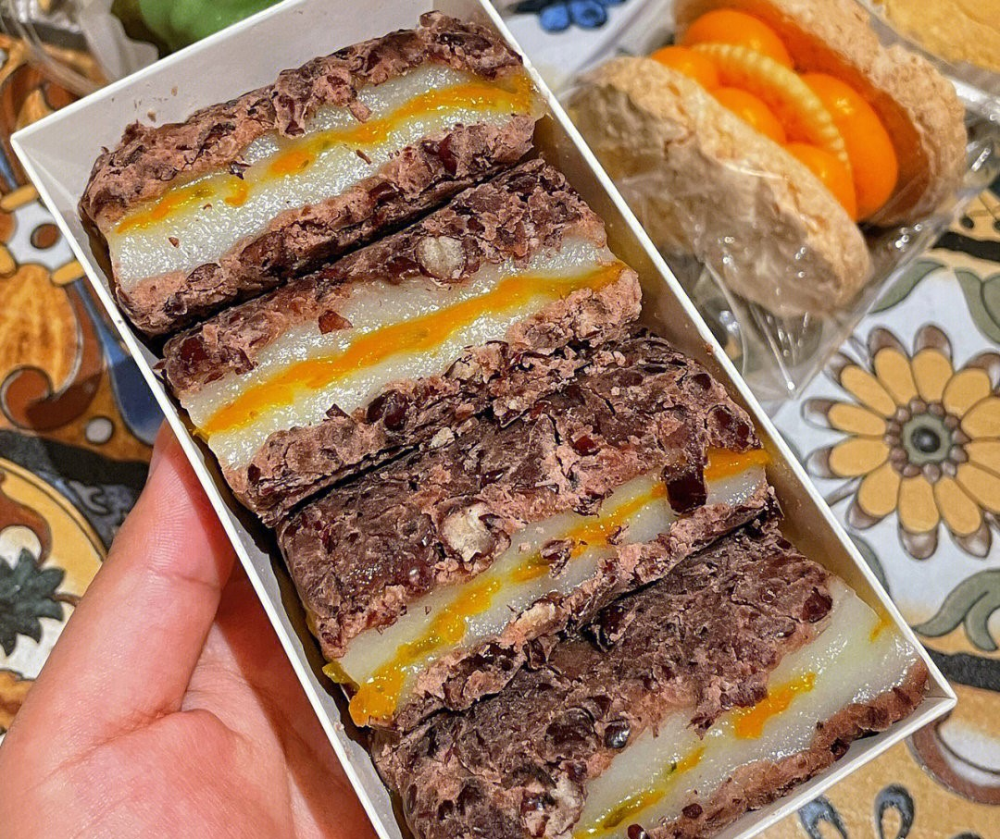
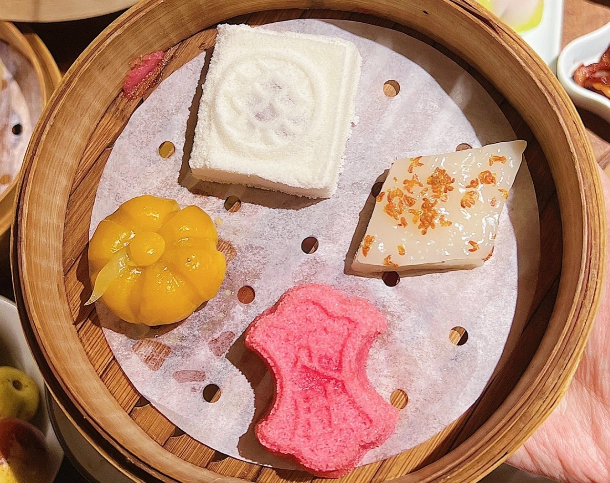
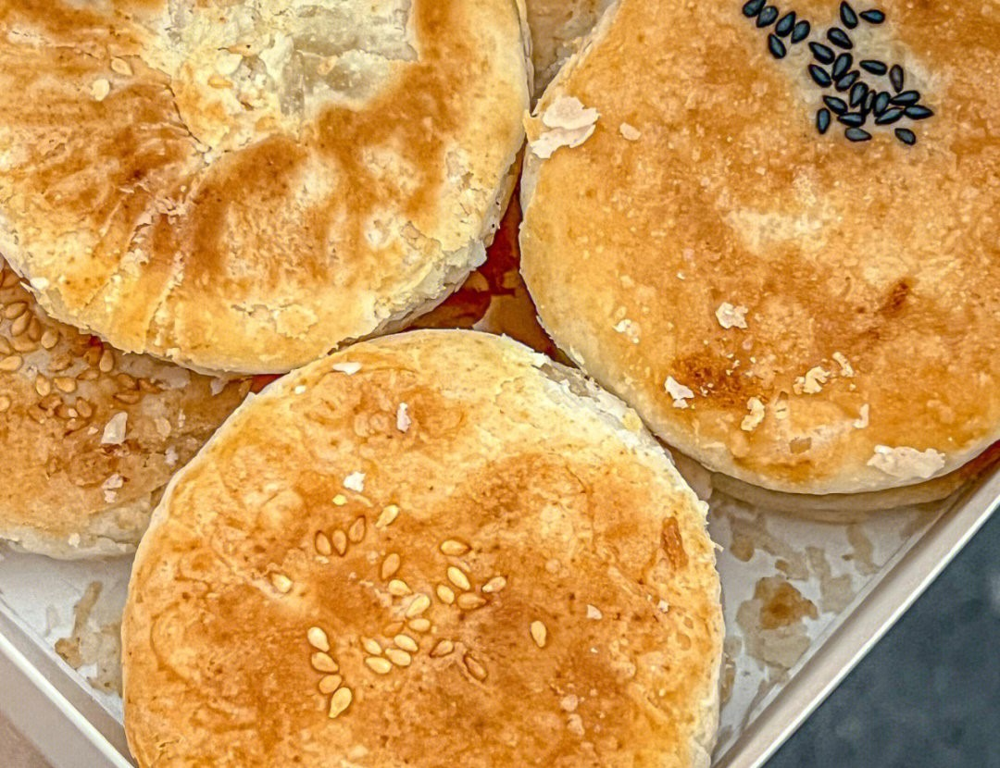

鸭汤泡饭

金丝牛肉饼

面线糊

红豆糯米糕

苏氏非遗糕点

板栗饼
苏州市，古称吴，简称为苏，又称姑苏、平江等，是国家历史文化名城和风景旅游城市，国家高新技术产业基地，长江三角洲重要的中心城市之一。
苏州位于长江三角洲中部、江苏省东南部，地处东经119°55′—121°20′，北纬30°47′—32°02′之间，苏州市区中心地理坐标为北纬31°19’，东经120°37’。东傍上海，南接浙江嘉兴、湖州，西抱太湖与无锡相邻，北与南通隔江相望，总面积8657.32平方千米。全市地势低平，境内河流纵横，湖泊众多，太湖水面绝大部分在苏州境内，河流、湖泊、滩涂面积占全市土地面积的36.6%，是著名的江南水乡。
苏州属亚热带季风海洋性气候，四季分明，气候温和，雨量充沛，土地肥沃，物产丰富，自然条件优越。主要种植水稻、麦子、油菜、林果等。低洼塘田较多，出产莲藕、芡实、茭白等水生作物。特产有鸭血糯、白蒜、柑橘、枇杷、板栗、梅子、桂花、碧螺春茶等。长江刀鱼、阳澄湖大闸蟹和太湖白鱼、银鱼、白虾等为著名水产品。
苏州是全国首批24个历史文化名城之一。全市现有文物保护单位881处,其中国家级61处。 苏州是全国重点旅游城市。平江、山塘历史街区分别被评为中国历史文化名街和中国最受欢迎的旅游历史文化名街。苏州大市范围内现有108座园林列入苏州园林名录。拙政园、留园、网师园、环秀山庄、沧浪亭、狮子林、艺圃、耦园、退思园等9个古典园林被联合国列入《世界文化遗产名录》。
鸭汤泡饭
金丝牛肉饼
面线糊
红豆糯米糕
苏氏非遗糕点
板栗饼